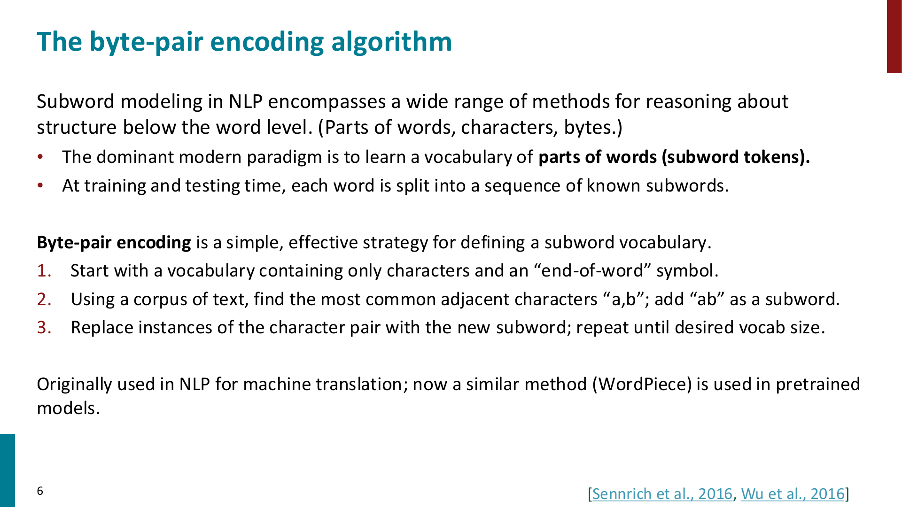
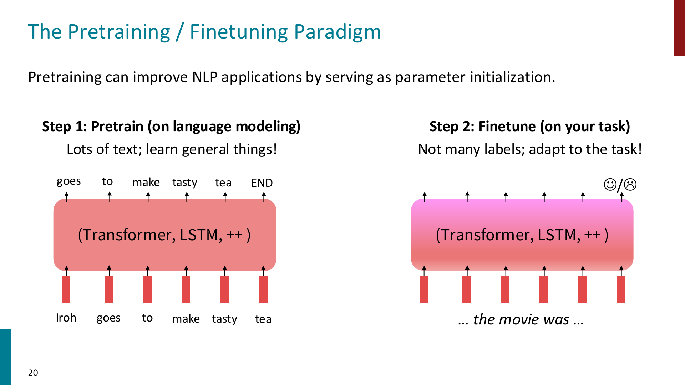
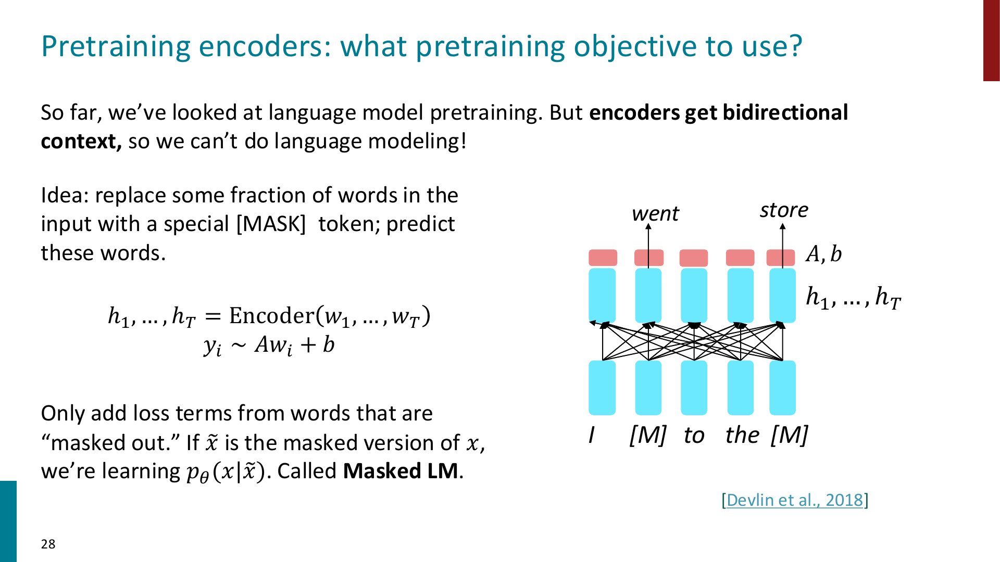
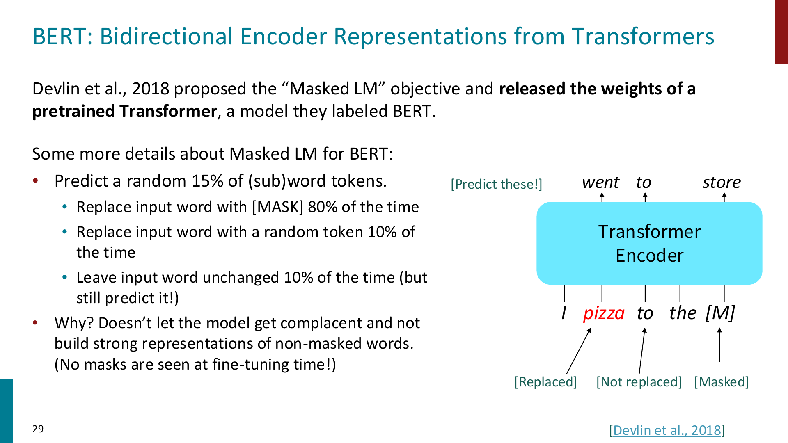
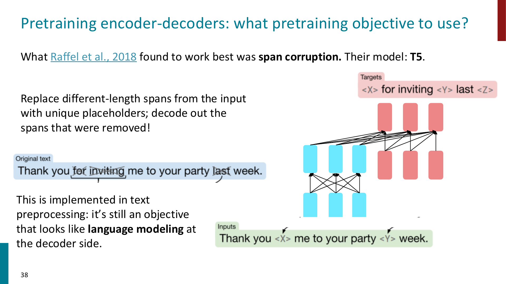
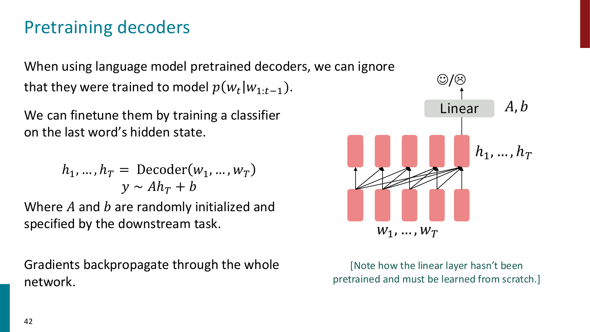
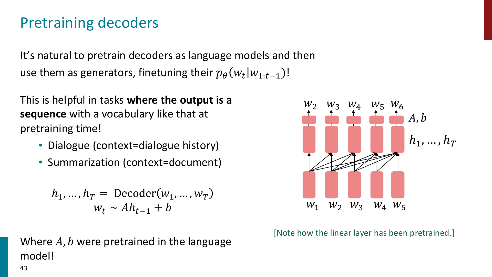
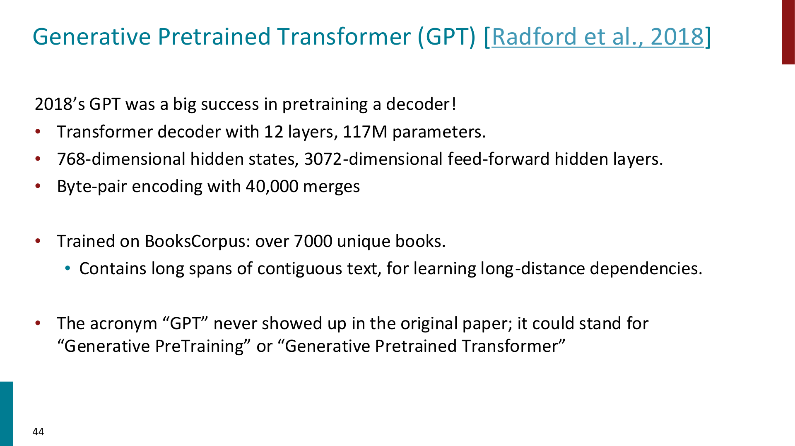
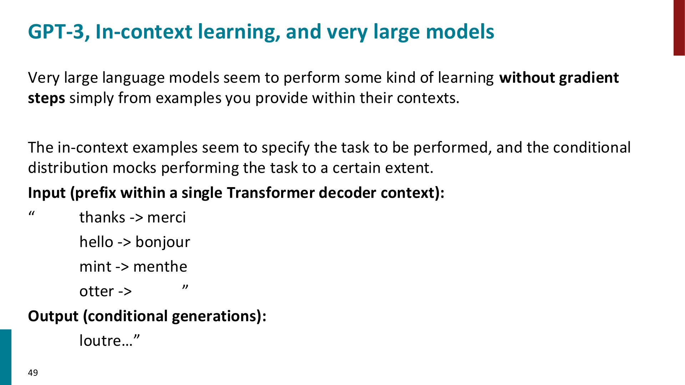
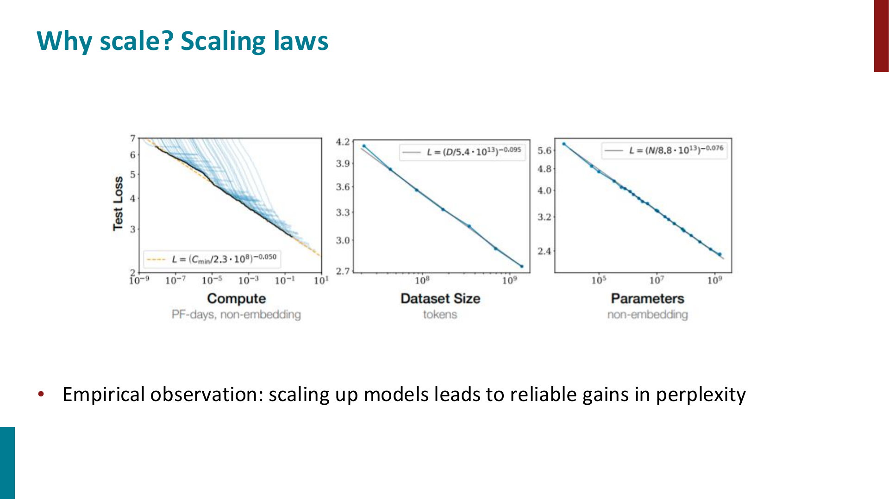

Pretraining
约 2748 个字 6 行代码 10 张图片 预计阅读时间 28 分钟
Pretraining 的核心思想是：先在大规模、通常不需要人工标注的文本上训练模型，让模型学到比较通用的语言知识；然后再把这个模型拿到具体任务上 finetune
也就是：
Important
Pretraining 能 scale 的关键在于：不要依赖昂贵的 labeled data，而是利用互联网上大量自然文本构造自监督任务。
常见的做法是：hide parts of the input, then train the model to reconstruct them.
Subword Modeling
之前我们把词表看成一个固定大小的 word vocabulary，如果测试时出现词表里没有的词，就只能映射成 UNK
这会带来几个问题：
- 拼写错误，例如
laern - 新词，例如
Transformerify - 罕见词
- 形态变化，例如同一个词根的不同变体
如果所有没见过的词都变成同一个 UNK，模型就完全丢失了这些词内部的结构信息
因此现代 NLP 通常使用 subword tokens：不一定把一个 word 当成最小单位，而是把 word 切成更小的 pieces

Byte-Pair Encoding
Byte-Pair Encoding (BPE) 是一种构造 subword vocabulary 的简单方法：
- 从 character-level vocabulary 开始，包含所有字符以及 end-of-word symbol
- 在 corpus 中找到最常见的相邻 token pair，例如
a,b - 把这个 pair 合并成新的 subword token
ab - 重复这个过程，直到达到想要的 vocab size
这样会形成一个介于 character 和 word 之间的 vocabulary
- 高频词可能直接成为一个完整 token，例如
hat - 低频词会被拆成多个 subword
- 最坏情况下，一个词可以被拆成字符序列，因此不容易出现完全无法表示的
UNK
Tip
Subword modeling 的好处是：模型既不用维护极其巨大的 word vocabulary，也不会像 character-level model 那样让序列变得特别长。
它是在 vocabulary size 和 sequence length 之间做折中。
From word embeddings to model pretraining
在最早的做法里，我们已经见过一种 pretraining：预训练 word embeddings
例如 word2vec / GloVe：
但是 pretrained word embeddings 有一个重要限制：同一个 word 在不同句子里仍然对应同一个 vector
比如：
I record the record.
这里两个 record 一个更像 verb，一个更像 noun，但静态 word embedding 会给它们相同的初始表示
Important
Word embedding pretraining 只预训练了 embedding matrix，大部分上下文建模参数仍然是随机初始化的。
Model pretraining 则是把整个 Transformer / LSTM 等模型都预训练，让模型在 pretraining 阶段就学习如何根据上下文表示 token 和句子。
现代 NLP 的 pretraining 更像：
这使模型学到的不只是 word-level semantics，还包括 syntax, coreference, sentiment, factual knowledge, topic 等更复杂的语言规律
Pretraining / Finetuning Paradigm

Pretraining / Finetuning 可以分成两步：
- Pretrain
- 使用大量 unlabeled text
- 学习通用语言结构和参数初始化
- 训练任务通常是 language modeling 或 reconstruct corrupted input
- Finetune
- 使用具体 downstream task 的 labeled data
- 数据量通常小很多
- 在预训练参数基础上继续训练，让模型适应具体任务
以 language modeling pretraining 为例，模型学习：
训练目标是最大化真实文本的概率，等价于最小化 negative log-likelihood：
pretrain 完后，保存模型参数，然后在下游任务上继续训练
Tip
可以把 pretraining 看成一种强大的 parameter initialization。
随机初始化的模型从零开始学语言；pretrained model 已经通过大量文本学过语言，再用少量 labeled data 去适配任务。
Model pretraining three ways
不同 Transformer 架构适合不同的预训练方式：
- Encoder
- 可以看到 bidirectional context
- 适合做 classification, tagging, retrieval, NLU 等理解类任务
- 代表模型：BERT
- Encoder-Decoder
- encoder 负责理解输入，decoder 负责生成输出
- 适合 seq2seq 任务
- 代表模型：T5
- Decoder
- 使用 causal mask，只能看 left context
- 最自然的目标就是 language modeling
- 适合 autoregressive generation
- 代表模型：GPT
Pretraining Encoders
Encoder 的 self-attention 是 bidirectional 的，每个位置都能看到左右两边的 token
这就导致它不能直接做普通 language modeling：
因为 encoder 在表示 \(w_t\) 的时候已经看到了未来 token，如果还让它预测下一个词，就会发生信息泄漏
因此 BERT 使用 Masked Language Modeling (MLM)：
随机 mask 掉输入中的一部分 token，让 encoder 根据双向上下文预测被 mask 的 token

设原始输入是：
mask 后的输入是：
encoder 输出 hidden states：
对于被 mask 的位置 \(i\)，用 hidden state 预测原 token：
loss 只在被 mask 的位置上计算：
其中 \(M\) 是被 mask 的位置集合
Important
MLM 的关键是：encoder 可以利用左右两边的 context，因此它学到的是 bidirectional contextual representation。
这也是 BERT 适合理解类任务的原因。
BERT
BERT 全称为 Bidirectional Encoder Representations from Transformers

BERT 的 MLM 细节：
- 随机选择 15% 的 subword tokens 来预测
- 对被选中的 token：
- 80% 替换成
[MASK] - 10% 替换成 random token
- 10% 保持原 token 不变，但仍然要求模型预测它
- 80% 替换成
为什么不总是替换成 [MASK]？
因为 finetuning 和 test time 通常不会出现 [MASK]，如果模型只在 [MASK] 位置上学习表示，pretraining 和 finetuning 之间会产生 mismatch
Tip
BERT 让一部分被预测 token 保持不变，目的是逼模型对所有位置都构建强 representation，而不是只对显式 [MASK] 的位置认真建模。
BERT 还使用过 Next Sentence Prediction (NSP)：
- 输入两个连续文本片段
- 判断第二个片段是否真的跟在第一个片段后面
不过后来的工作认为 NSP 不一定必要，例如 RoBERTa 主要通过训练更久、使用更多数据、去掉 NSP 来改进 BERT
BERT 的常见规模：
- BERT-base: 12 layers, 768 hidden size, 12 attention heads, 110M parameters
- BERT-large: 24 layers, 1024 hidden size, 16 attention heads, 340M parameters
Important
BERT 这类 encoder-only model 不适合直接做自然的 autoregressive generation。
因为它的预训练目标不是从左到右生成词，而是根据双向上下文填空。
Extensions of BERT
课件中提到两个常见扩展：
- RoBERTa
- 更长时间训练
- 更多数据
- 去掉 Next Sentence Prediction
- SpanBERT
- 不只是 mask 单个 token，而是 mask 连续 span
- 任务更难，也更接近很多需要短语级理解的任务
Tip
从 RoBERTa 可以看到一个重要结论：不改变 Transformer encoder 结构，只增加数据和计算，也可能显著提升 pretraining 效果。
Pretraining Encoder-Decoders
Encoder-decoder 架构同时有：
- encoder 的 bidirectional understanding
- decoder 的 autoregressive generation
因此它很自然地适合 seq2seq task，例如 translation, summarization, question answering
一种简单想法是：把输入前缀给 encoder，然后让 decoder 继续做 language modeling
但 T5 发现更有效的方式是 span corruption

Span corruption 的做法：
- 从原始文本中删除若干连续 span
- 用特殊 placeholder 替换每个被删掉的 span，例如
<X>,<Y> - decoder 的目标是按顺序生成被删除的 spans
例如：
corrupted input:
target:
Important
T5 的 span corruption 本质上是一个 denoising objective：
给模型一个被破坏的输入，让它恢复缺失内容。
decoder 端仍然是 autoregressive generation，所以训练形式依然像 language modeling。
T5 还有一个重要思想：把各种 NLP task 都表示成 text-to-text
例如：
这样 classification, translation, summarization, QA 都可以统一成“输入一段文本，输出一段文本”
Pretraining Decoders
Decoder-only Transformer 使用 causal mask，只能 attend to past tokens
因此它最自然的 pretraining objective 就是 language modeling：
也就是：
Finetune decoder for classification
如果下游任务是分类任务，可以把整段输入喂给 pretrained decoder，然后取最后一个 token 的 hidden state 做分类

形式上：
其中 \(A,b\) 是下游任务新增的 classifier 参数，通常是随机初始化的
Tip
这里 pretrained decoder 提供语言表示能力，而最后的 linear classifier 需要从下游 labeled data 中学习。
Finetune decoder for generation
如果下游任务本身就是生成序列，例如 dialogue 或 summarization，那么 decoder-only model 可以更自然地继续使用 language modeling head

例如 summarization 可以写成：
模型继续预测：
这时 \(A,b\) 也来自 language modeling pretraining，因此输出层本身也已经被预训练过
Important
对于生成任务，pretrained decoder 的优势很直接：pretraining 和 finetuning 都在做 next-token prediction，只是条件文本和目标文本变了。
GPT
GPT 是 decoder-only pretraining 的代表

课件中 GPT-1 的设置：
- Transformer decoder
- 12 layers
- 117M parameters
- hidden size 768
- FFN hidden size 3072
- BPE with 40,000 merges
- 使用 BooksCorpus 训练
对于一些分类任务，GPT 会把输入格式化成一个 token sequence，然后在特殊 token 的表示上做分类
例如 natural language inference：
然后把 classifier 接在[EXTRACT] token 的 hidden state 上
In-context Learning
当 decoder language model 变得非常大时，它不一定需要 gradient update 才能适配一个任务
如果我们在 prompt 里给出几个输入输出示例，模型可能会根据这些 examples 推断接下来要做什么，这叫 in-context learning

例如 prompt 中给出：
模型可能继续生成：
Important
In-context learning 没有更新模型参数。
它只是把 examples 放进当前 context，让 decoder 根据 prefix 的条件分布继续生成。
这和 finetuning 的区别是：
- finetuning: 用 labeled data 更新参数
- in-context learning: 不更新参数，只改变输入 prompt
Scaling Laws
课件中还强调了 scaling 的重要性：随着 model size, dataset size, compute 增大，language model 的 perplexity / loss 通常会稳定下降

粗略来说，大 Transformer 的训练成本和下面两个因素强相关：
所以不是参数越大越好，还要考虑 data 和 compute 的分配
Tip
Compute-aware scaling 的核心问题是：
给定固定训练预算，应该把 compute 用在更大的 model 上，还是更多的 training tokens 上？
如果模型太大但数据不够，可能并不是最优；更小但训练 token 更多的模型有时反而效果更好。
What does pretraining teach?
Pretraining 的任务看起来只是“预测缺失 token”或“预测下一个 token”，但为了做好这些任务，模型会被迫学习很多语言和世界知识
例如：
Stanford University is located in ___, California.- factual knowledge
I put ___ fork down on the table.- syntax
The woman walked across the street, checking for traffic over ___ shoulder.- coreference
I went to the ocean to see the fish, turtles, seals, and ___.- lexical semantics / topic
The movie was ___.- sentiment
Important
Pretraining 并不是显式告诉模型 grammar, sentiment, coreference rules。
这些能力是模型为了降低 language modeling / reconstruction loss，从大规模文本统计中间接学出来的。
但 pretraining 也会带来问题：
- 模型可能记住训练数据中的内容
- 训练数据可能包含 copyrighted material 或 private information
- 模型会学习并放大数据中的 bias，例如 racism, sexism 等
因此 pretraining 的效果很强，但它不是免费且无风险的：数据来源、隐私、版权、公平性都需要被认真考虑
Summary of Pretraining
可以把这一章的主线总结成：
- Subword modeling 解决固定 word vocabulary 和
UNK的问题 - Pretraining 从静态 word embeddings 发展到 whole-model pretraining
- Pretraining / finetuning paradigm 用大量无标注数据学习通用能力，再用少量标注数据适配任务
- Encoder-only model 使用 MLM，代表是 BERT
- Encoder-decoder model 常用 denoising / span corruption，代表是 T5
- Decoder-only model 使用 language modeling，代表是 GPT
- 大模型可以通过 prompt 做 in-context learning
- Scaling laws 说明 model size, data size, compute 对效果有可预测影响
- Pretraining 会学习很多有用语言规律，也会继承和放大训练数据中的风险